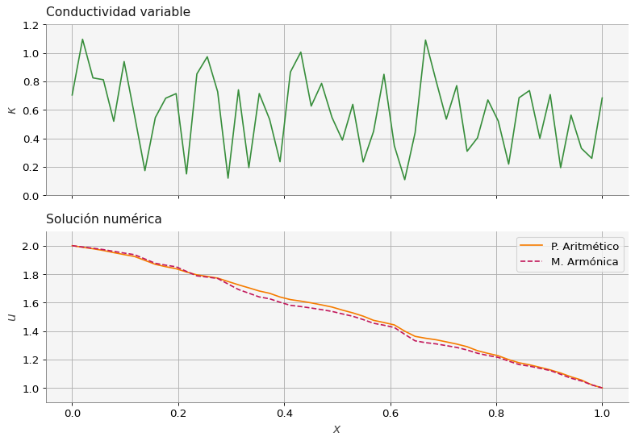

import numpy as np
import matplotlib.pyplot as plt
import macti.visual as mvis
def buildMatrix(N, k, f):
'''
Parameters:
N: int Tamaño de la matriz.
k: float Conductividad.
f: función para calcular las conductividades
'''
# Matriz de ceros
A = np.zeros((N,N))
# Primer renglón
A[0,0] = (f(k[0], k[1]) + f(k[1], k[2]))
A[0,1] = -f(k[1], k[2])
# Renglones interiores
for i in range(1,N-1):
### BEGIN SOLUTION
A[i,i] = (f(k[i+2], k[i+1]) + f(k[i+1], k[i]))
A[i,i+1] = -f(k[i+1], k[i+2])
A[i,i-1] = -f(k[i+1], k[i])
### END SOLUTION
# Último renglón
A[N-1,N-2] = -f(k[N-1], k[N])
A[N-1,N-1] = (f(k[N-1], k[N]) + f(k[N], k[N+1]))
return A8 Conductividad variable.
Objetivo.
Considere la ecuación de Poisson con \(\kappa\) variable y condiciones de frontera de tipo Dirichlet:
\[ -\dfrac{d}{d x} \left(\kappa \dfrac{d u}{d x} \right) = f \quad \text{con} \quad \kappa = \kappa(x) \]
Resolver el problema para los siguientes casos: * Caso 1: \(L = 1, \, N = 50, \, A = 2.0, \, B = 1.0, \, \kappa = |sin(4 \pi x)|+\delta \kappa\) con \(\delta \kappa = 0.1\). * Caso 2: \(L = 1, \, N = 50, \, A = 2.0, \, B = 1.0, \, \kappa = \texttt{random}(x)+\delta \kappa\) con \(\delta \kappa = 0.1\).
MACTI-Analisis_Numerico_01 by Luis M. de la Cruz is licensed under Attribution-ShareAlike 4.0 International


Trabajo realizado con el apoyo del Programa UNAM-DGAPA-PAPIME PE101019, PE101922
# Parámetros físicos
L = 1.0
bA = 2.0 # Valor de u en A (Dirichlet)
bB = 1.0 # Valor de u en B (Dirichlet)
S = 0.0
# Parámetros numéricos
N = 50 # Número de incógnitas
h = L / (N+1)
r = 1 / h**2
# Coordenadas de los nodos
x = np.linspace(0, L, N+2)
# Conductividad variable
#k = np.abs(np.sin(4 * np.pi * x)) + 0.1
k = np.random.rand(N+2) + 0.1# Promedio Aritmético y Media Armónica
### BEGIN SOLUTION
def pAritmetico(a, b):
return 0.5 * (a + b)
def mArmonica(a, b):
return 2 * a * b / (a + b)
### EDN SOLUTIONA = buildMatrix(N, k, pAritmetico) # Construcción de la matriz
b = np.zeros(N) # Lado derecho del sistema
b[1:] = S / r # Fuente o sumidero
b[0] += pAritmetico(k[1], k[0]) * bA # Condición de frontera en A
b[-1] += pAritmetico(k[N+1], k[N]) * bB # Condición de frontera en B
u1 = np.zeros(N+2) # Arreglo para almacenar la solución
u1[0] = bA # Frontera izquierda Dirichlet
u1[-1] = bB # Frontera derecha Dirichlet
u1[1:N+1] = np.linalg.solve(A,b) # Sol. del sist. lineal
A = buildMatrix(N, k, mArmonica) # Construcción de la matriz
b = np.zeros(N) # Lado derecho del sistema
b[1:] = S / r # Fuente o sumidero
b[0] += mArmonica(k[1], k[0]) * bA # Condición de frontera en A
b[-1] += mArmonica(k[N+1], k[N]) * bB # Condición de frontera en B
u2 = np.zeros(N+2) # Arreglo para almacenar la solución
u2[0] = bA # Frontera izquierda Dirichlet
u2[-1] = bB # Frontera derecha Dirichlet
u2[1:N+1] = np.linalg.solve(A,b) # Sol. del sist. lineal
fig, (ax1, ax2) = plt.subplots(2, 1, sharex=True, figsize=(10,7))
ax1.plot(x,k,'C2-')
ax1.set_ylabel('$\kappa$')
ax1.set_title('Conductividad variable')
ax1.set_ylim(0.0,1.2)
ax1.grid()
ax2.plot(x,u1,'C1-', label='P. Aritmético')
ax2.plot(x,u2,'C3--', label='M. Armónica')
ax2.set_xlabel('$x$')
ax2.set_ylabel('$u$')
ax2.legend()
ax2.set_title('Solución numérica')
ax2.set_ylim(0.9,2.1)
ax2.grid()
plt.tight_layout()